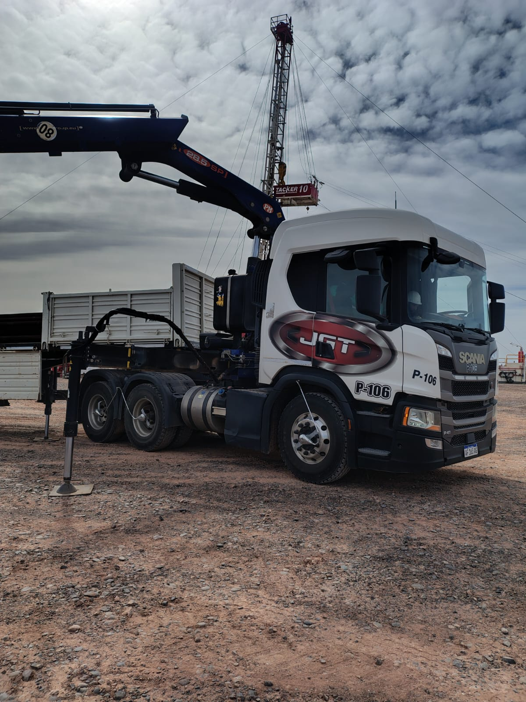

Servicios de TRANSPORTE JGT
Servicios de TRANSPORTE JGT
Índice
HIDROGRÚAS
-
Una flota de 7 hidrogruas PM de 28.5 hasta 70 toneladas-metro

SEMIRREMOLQUES
-
Variedad y capacidad
Semirremolques plataforma, batea y low-bed para transporte de cargas pesadas y sobredimensionadas.
Configuraciones para acoplamiento a distintos tractores y transporte regional.
-
Servicios complementarios
Transporte especializado, aseguramiento de cargas y maniobras en campo.
CARRETONES
- Carretones de hasta 5 Ejes
Carretones Deprimidos y de Cuello Rampa
Carretones Equipados con Malacate
Carretones con Plato de 3 ½ Pulgadas

GOMERIA MOVIL
-
Servicio de Gomería para maquinas viales, vehiculos pesados y livianos.
Parchado, rotación de ruedas, cambio de valvulas, calibracion.